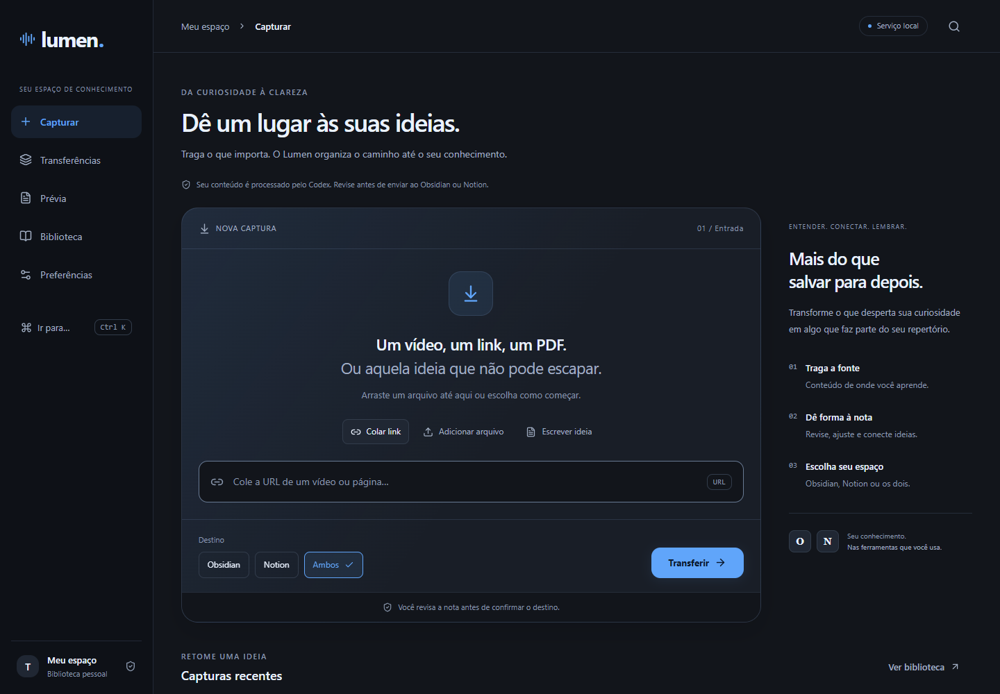

Capture.
Cole uma URL, adicione um arquivo ou registre uma ideia. Cada fonte encontra o seu lugar.
VídeoLinkPDFMarkdown
Vídeos, links, PDFs e ideias. Transforme o que você encontra em notas claras, prontas para sua biblioteca.
Aplicativo local · Obsidian + Notion · Sem chaves no navegador

MENOS ATRITO. MAIS CLAREZA.
Um fluxo simples, sem perder a origem.
Você revisa antes de
enviar.
Cole uma URL, adicione um arquivo ou registre uma ideia. Cada fonte encontra o seu lugar.
Acompanhe a extração e a geração da nota. Ajuste título, resumo e tags na prévia editável.
Confirme o envio ao Obsidian, ao Notion ou a ambos. Histórico e recibos ajudam a acompanhar cada entrega.
FEITO PARA CONTINUAR.
Capture agora. Retome depois. O Lumen guarda o contexto da transferência para você voltar ao que importa.
COMECE PELO SEU COMPUTADOR.
Este site apresenta o projeto. Para processar fontes e enviar notas, instale o aplicativo local. O GitHub Pages não executa Python nem acessa seu Obsidian ou sua conta do Notion.
Windows com Edge ou Comet, Python 3.12+, Node.js 24+ e Codex autenticado para gerar notas. A conexão Notion é configurada na sua própria conta.
Os limites do Codex dependem da sua assinatura. Nenhum crédito de serviço é incluído pelo projeto.
git clone https://github.com/ArthurLAragao/lumen-organizer.git
cd lumen-organizer
python -m venv .venv
.\.venv\Scripts\python.exe -m pip install -r requirements.txt
npm --prefix frontend ci
npm --prefix frontend run buildDepois, configure seus destinos e abra o app seguindo o README.
O histórico local, as fontes capturadas e suas notas não fazem parte deste site nem do repositório. Ao usar IA ou publicar no Notion, o conteúdo necessário é enviado ao serviço correspondente.
Vídeos precisam de legendas disponíveis. PDFs precisam conter texto; digitalizações exigem OCR. Arquivos têm limite de 20 MB e PDFs de 300 páginas. Sites autenticados ou dinâmicos podem exigir texto manual.
A validação confere a estrutura do documento. Ela não garante exatidão factual nem registra o conteúdo como estudado. Revise a nota antes de publicar.
Não automaticamente. O armazenamento é separado por navegador e endereço. Faça uma exportação JSON no Atlas original e importe no novo ambiente para transferir os dados.